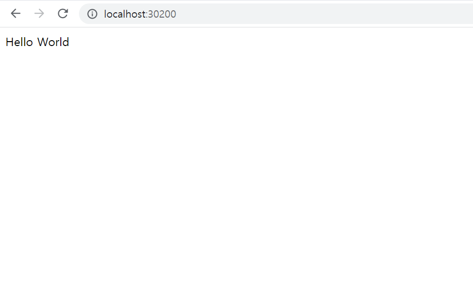

웹 소스 파드화
Spring Boot, FastAPI, Next.js, Blazor로 만든 웹 소스를 각각 Docker 이미지로 빌드하고, 쿠버네티스에서 Deployment와 NodePort Service로 배포해 접속까지 확인한다.
개발 언어별 빌드
언어마다 접속하면 hello world를 보여주는 간단한 웹 프로그램을 만들고, Dockerfile로 이미지를 빌드한 뒤 Docker Hub에 push한다. 모든 Dockerfile은 멀티 스테이지 빌드로 작성했다. 빌드 도구는 첫 번째 스테이지에만 두고, 최종 이미지에는 실행에 필요한 파일만 담는다.
| 언어/프레임워크 | 이미지 | 컨테이너 포트 |
|---|---|---|
| Spring Boot | bluedove97/webdemo-springboot:v0.0.1 | 8080 |
| Python FastAPI | bluedove97/webdemo-fastapi:v0.0.1 | 8000 |
| Next.js | bluedove97/webdemo-nextjs:v0.0.1 | 3000 |
| Blazor | bluedove97/webdemo-blazor:v0.0.1 | 80 |
1. Spring Boot 샘플 Dockerfile 빌드
localhost:8080에 접속하면 hello world를 보여주는 컨트롤러를 만든다. (start.spring.io에서 Spring Web 의존성을 넣어 Maven 프로젝트 생성)
// src/main/java/com/example/webdemo/HelloController.java
package com.example.webdemo;
import org.springframework.web.bind.annotation.GetMapping;
import org.springframework.web.bind.annotation.RestController;
@RestController
public class HelloController {
@GetMapping("/")
public String hello() {
return "hello world - springboot";
}
}이미지 안에서 Maven 빌드까지 하므로 로컬에서 mvn package를 미리 하지 않아도 된다.
cat > Dockerfile
# 1단계: Maven으로 jar 빌드
FROM maven:3.9-eclipse-temurin-17 AS build
WORKDIR /app
COPY pom.xml .
RUN mvn dependency:go-offline -B
COPY src ./src
RUN mvn clean package -DskipTests
# 2단계: JRE만 있는 가벼운 이미지에서 실행
FROM eclipse-temurin:17-jre-alpine
WORKDIR /app
COPY --from=build /app/target/*.jar app.jar
EXPOSE 8080
ENTRYPOINT ["java","-jar","/app/app.jar"]#빌드
docker build -t bluedove97/webdemo-springboot:v0.0.1 .
#실행 및 확인
docker run -d -p 8080:8080 --name webdemo-springboot bluedove97/webdemo-springboot:v0.0.1
curl localhost:8080
#중지 및 푸시
docker rm -f webdemo-springboot
docker push bluedove97/webdemo-springboot:v0.0.12. Python FastAPI 샘플 Dockerfile 빌드
# main.py
from fastapi import FastAPI
app = FastAPI()
@app.get("/")
def hello():
return {"message": "hello world - fastapi"}# requirements.txt
fastapi==0.115.0
uvicorn[standard]==0.30.6uvicorn이 컨테이너 밖에서도 접속을 받도록 --host 0.0.0.0으로 띄운다.
cat > Dockerfile
FROM python:3.12-slim
WORKDIR /app
# 의존성 먼저 설치 (소스만 바뀌면 이 레이어는 캐시 재사용)
COPY requirements.txt .
RUN pip install --no-cache-dir -r requirements.txt
COPY main.py .
EXPOSE 8000
CMD ["uvicorn", "main:app", "--host", "0.0.0.0", "--port", "8000"]#빌드
docker build -t bluedove97/webdemo-fastapi:v0.0.1 .
#실행 및 확인
docker run -d -p 8000:8000 --name webdemo-fastapi bluedove97/webdemo-fastapi:v0.0.1
curl localhost:8000
#중지 및 푸시
docker rm -f webdemo-fastapi
docker push bluedove97/webdemo-fastapi:v0.0.13. Next.js 샘플 Dockerfile 빌드
npx create-next-app@latest webdemo-nextjs --js --app --no-tailwind --no-eslint --no-src-dir --use-npm
cd webdemo-nextjs// app/page.js
export default function Home() {
return <h1>hello world - nextjs</h1>;
}standalone 모드로 빌드하면 실행에 필요한 파일만 .next/standalone에 모이므로 node_modules 전체를 복사하지 않아도 된다.
// next.config.mjs
const nextConfig = {
output: "standalone",
};
export default nextConfig;cat > Dockerfile
# 1단계: 의존성 설치 및 빌드
FROM node:20-alpine AS build
WORKDIR /app
COPY package.json package-lock.json ./
RUN npm ci
COPY . .
RUN npm run build
# 2단계: standalone 결과물만 실행
FROM node:20-alpine
WORKDIR /app
ENV NODE_ENV=production
ENV HOSTNAME=0.0.0.0
ENV PORT=3000
COPY --from=build /app/.next/standalone ./
COPY --from=build /app/.next/static ./.next/static
COPY --from=build /app/public ./public
EXPOSE 3000
CMD ["node", "server.js"]#빌드 (node_modules, .next는 .dockerignore에 넣어두면 빌드 컨텍스트가 가벼워진다)
docker build -t bluedove97/webdemo-nextjs:v0.0.1 .
#실행 및 확인
docker run -d -p 3000:3000 --name webdemo-nextjs bluedove97/webdemo-nextjs:v0.0.1
curl localhost:3000
#중지 및 푸시
docker rm -f webdemo-nextjs
docker push bluedove97/webdemo-nextjs:v0.0.14. Blazor 샘플 Dockerfile 빌드
.NET 8 솔루션 안의 BlazorWeb.Server 프로젝트를 빌드한다. Dockerfile은 솔루션 루트(BlazorWeb.Server 폴더가 보이는 위치)에 둔다.
BlazorWeb/
├── Dockerfile
└── BlazorWeb.Server/
├── BlazorWeb.Server.csproj
└── ...스테이지를 4개로 나눴다. base(런타임 이미지), build(SDK로 restore/build), publish(배포 파일 생성), final(base에 publish 결과만 복사)이다. csproj만 먼저 복사해 restore하므로 소스만 바뀌면 restore 레이어는 캐시를 재사용한다.
.NET 8부터 ASP.NET 컨테이너 이미지는 기본으로 8080 포트에서 접속을 받는다. EXPOSE 80은 문서 역할만 하므로, 실제로 80 포트에서 받도록 ASPNETCORE_HTTP_PORTS=80을 함께 지정한다. 443(HTTPS)은 인증서 설정이 따로 필요하므로, 여기서는 80만 사용한다.
cat > Dockerfile
FROM mcr.microsoft.com/dotnet/aspnet:8.0 AS base
WORKDIR /app
ENV ASPNETCORE_HTTP_PORTS=80
EXPOSE 80
EXPOSE 443
FROM mcr.microsoft.com/dotnet/sdk:8.0 AS build
WORKDIR /src
# Server가 참조하는 프로젝트(Client, Shared 등)가 있으면 그 csproj도 같은 방식으로 먼저 COPY한다
COPY ["BlazorWeb.Server/BlazorWeb.Server.csproj", "BlazorWeb.Server/BlazorWeb.Server.csproj"]
RUN dotnet restore "BlazorWeb.Server/BlazorWeb.Server.csproj"
COPY . .
RUN dotnet build "BlazorWeb.Server/BlazorWeb.Server.csproj" -c Release -o /app/build
FROM build AS publish
RUN dotnet publish "BlazorWeb.Server/BlazorWeb.Server.csproj" -c Release -o /app/publish
FROM base AS final
WORKDIR /app
COPY --from=publish /app/publish .
ENTRYPOINT ["dotnet", "BlazorWeb.Server.dll"]#빌드 (bin, obj는 .dockerignore에 넣어둔다)
docker build -t bluedove97/webdemo-blazor:v0.0.1 .
#실행 및 확인
docker run -d -p 8081:80 --name webdemo-blazor bluedove97/webdemo-blazor:v0.0.1
curl localhost:8081
#중지 및 푸시
docker rm -f webdemo-blazor
docker push bluedove97/webdemo-blazor:v0.0.1개발 언어별 파드화 배포
위에서 push한 이미지를 Deployment로 파드 3개씩 띄우고, NodePort Service를 붙여 클러스터 밖에서 접속할 수 있게 한다. 언어마다 Deployment와 Service를 ---로 구분해 yaml 파일 하나에 담았다.
| 앱 | Service | port → targetPort | nodePort |
|---|---|---|---|
| Spring Boot | svc-webdemo-springboot | 80 → 8080 | 30201 |
| FastAPI | svc-webdemo-fastapi | 80 → 8000 | 30202 |
| Next.js | svc-webdemo-nextjs | 80 → 3000 | 30203 |
| Blazor | svc-webdemo-blazor | 80 → 80 | 30204 |
1. Spring Boot 배포
cat > webdemo-springboot.yaml
apiVersion: apps/v1
kind: Deployment
metadata:
name: webdemo-springboot
spec:
replicas: 3
selector:
matchLabels:
app: webdemo-springboot
template:
metadata:
labels:
app: webdemo-springboot
spec:
containers:
- name: webdemo-springboot
image: bluedove97/webdemo-springboot:v0.0.1
ports:
- containerPort: 8080
resources:
requests:
cpu: 200m
memory: 256Mi
---
apiVersion: v1
kind: Service
metadata:
name: svc-webdemo-springboot
spec:
type: NodePort
selector:
app: webdemo-springboot
ports:
- protocol: TCP
port: 80
targetPort: 8080
nodePort: 302012. FastAPI 배포
cat > webdemo-fastapi.yaml
apiVersion: apps/v1
kind: Deployment
metadata:
name: webdemo-fastapi
spec:
replicas: 3
selector:
matchLabels:
app: webdemo-fastapi
template:
metadata:
labels:
app: webdemo-fastapi
spec:
containers:
- name: webdemo-fastapi
image: bluedove97/webdemo-fastapi:v0.0.1
ports:
- containerPort: 8000
resources:
requests:
cpu: 100m
memory: 128Mi
---
apiVersion: v1
kind: Service
metadata:
name: svc-webdemo-fastapi
spec:
type: NodePort
selector:
app: webdemo-fastapi
ports:
- protocol: TCP
port: 80
targetPort: 8000
nodePort: 302023. Next.js 배포
cat > webdemo-nextjs.yaml
apiVersion: apps/v1
kind: Deployment
metadata:
name: webdemo-nextjs
spec:
replicas: 3
selector:
matchLabels:
app: webdemo-nextjs
template:
metadata:
labels:
app: webdemo-nextjs
spec:
containers:
- name: webdemo-nextjs
image: bluedove97/webdemo-nextjs:v0.0.1
ports:
- containerPort: 3000
resources:
requests:
cpu: 100m
memory: 128Mi
---
apiVersion: v1
kind: Service
metadata:
name: svc-webdemo-nextjs
spec:
type: NodePort
selector:
app: webdemo-nextjs
ports:
- protocol: TCP
port: 80
targetPort: 3000
nodePort: 302034. Blazor 배포
Blazor Server 방식은 SignalR 연결로 화면을 주고받는다. 파드가 여러 개일 때 요청이 다른 파드로 가면 연결이 끊기므로, Service에 sessionAffinity: ClientIP를 줘서 같은 클라이언트는 같은 파드로 가게 한다. (WebAssembly 방식이라면 화면이 브라우저에서 돌기 때문에 이 설정은 없어도 된다.)
cat > webdemo-blazor.yaml
apiVersion: apps/v1
kind: Deployment
metadata:
name: webdemo-blazor
spec:
replicas: 3
selector:
matchLabels:
app: webdemo-blazor
template:
metadata:
labels:
app: webdemo-blazor
spec:
containers:
- name: webdemo-blazor
image: bluedove97/webdemo-blazor:v0.0.1
ports:
- containerPort: 80
resources:
requests:
cpu: 100m
memory: 128Mi
---
apiVersion: v1
kind: Service
metadata:
name: svc-webdemo-blazor
spec:
type: NodePort
sessionAffinity: ClientIP
selector:
app: webdemo-blazor
ports:
- protocol: TCP
port: 80
targetPort: 80
nodePort: 30204배포 적용 및 확인
#4개 앱 한 번에 배포
kubectl apply -f webdemo-springboot.yaml
kubectl apply -f webdemo-fastapi.yaml
kubectl apply -f webdemo-nextjs.yaml
kubectl apply -f webdemo-blazor.yaml
#파드, 서비스, 디플로이먼트 확인
kubectl get all -o wide
kubectl get svc
NAME TYPE CLUSTER-IP EXTERNAL-IP PORT(S) AGE
kubernetes ClusterIP 10.96.0.1 <none> 443/TCP 6d14h
svc-webdemo-blazor NodePort 10.105.21.34 <none> 80:30204/TCP 1m
svc-webdemo-fastapi NodePort 10.98.152.7 <none> 80:30202/TCP 1m
svc-webdemo-nextjs NodePort 10.110.64.201 <none> 80:30203/TCP 1m
svc-webdemo-springboot NodePort 10.101.88.15 <none> 80:30201/TCP 1m연결 테스트
클러스터 내부에서는 Service의 ClusterIP(80 포트)로, 노드에서는 nodePort로 접속해본다.
#내부 연결 (ClusterIP는 kubectl get svc 결과값 사용)
curl 10.101.88.15 #<--- springboot
curl 10.98.152.7 #<--- fastapi
curl 10.110.64.201 #<--- nextjs
curl 10.105.21.34 #<--- blazor
#노드 포트 연결
curl localhost:30201
curl localhost:30202
curl localhost:30203
curl localhost:30204외부 연결은 virtualbox의 port forwarding에서 node1으로 가는 30201~30204 포트를 세팅한 뒤, 바깥의 웹브라우저에서 http://localhost:30201 ~ http://localhost:30204 로 접속한다.


성공!